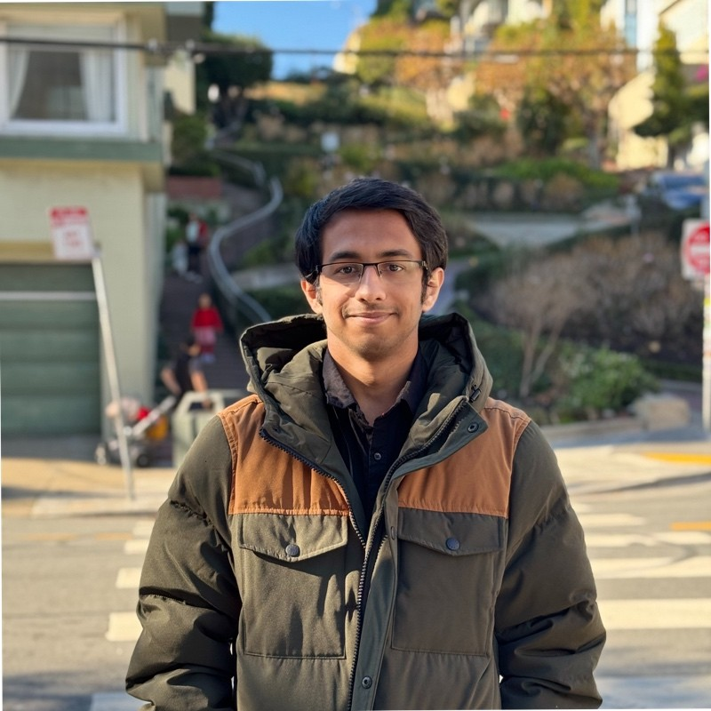

Interned at Nokia Solution Networks as a student trainee where I was part of the 5G RAN team.
[View Certificate]
As a research intern at Compsoft Technologies I worked on Predictive Model for forcasting demand and supply information
of Top crops by designing machine learning models highlighting its flaws by understanding the design briefs and client Specifications
that were provided in the Proposal.
[View Certificate]
I was a machine learning intern at SIAMAF healthcare which is a company incubated in Indian Institute of Science (IISc) and was involved in researching and Developing pre-trained models to classify cancer cells mainly breast cancer cells as either malignant or benign by understanding their histopathology. This is also my final-year project for my undergrad.
[View Certificate]
BNM Institute of Technology. I received my Bachelor of Engineering in Computer Science here with first class distinction. I spent most of my time studying and learning about machine learning, statistics and probabilites and doing some projects and freelancing in my free time. My final project was classfying cancer cells as malignant or benign in colloboration with SIAMAF healthcare.
I was a teaching Assistant for the course EE260C: Introduction to Self-Driving Stack teaching page where I was responsible for releasing labs on perception and planning, conducting office hours and grading every students labs and projects. I also conducted lectures from time to time.
Lanugages I am familiar with include Python, Java, C, SQL and Matlab.
Some frameworks include PyTorch, Tensorflow, Docker, Git, Carla and Jenkins.